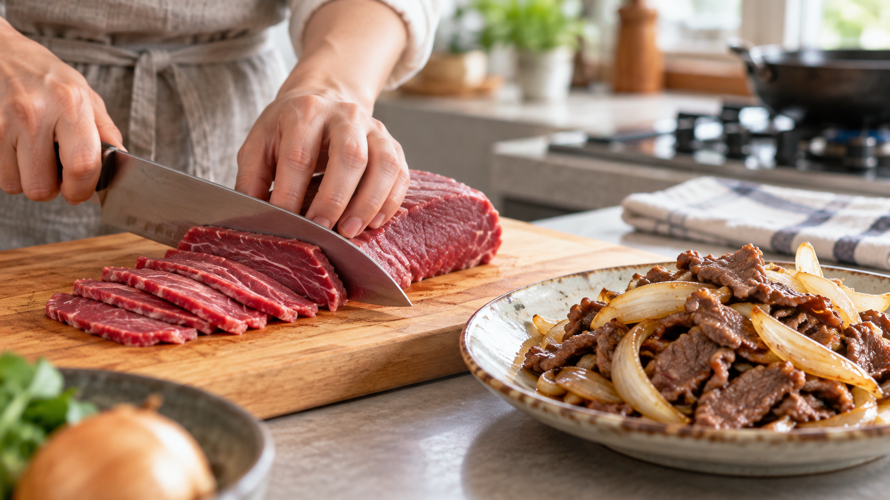

肉は繊維を断って切る｜同じ肉が短く噛み切れる理由
牛もも肉を炒めたとき、薄く切ったのに筋っぽく感じることがある。包丁を入れる向きで、噛み心地は変わるのだろうか。
肉に見える線を横切る向きに切ると、長い繊維を短くできる。 噛み始めの歯切れを整える工夫になる。ただし、切り方だけで肉全体の柔らかさが決まるわけではない。
赤身には細長い繊維が束になっている。ひもを縦に裂くと長いまま残り、輪切りにすると短くなる。肉も同じように、線に沿って切るか、線を横切って切るかで、一切れに残る繊維の長さが変わる。
牛肉を調べた研究では、繊維を横切る向きの薄切りは、繊維に沿った薄切りより切断に必要な力が小さかった。薄切り牛肉の研究 また、別の研究では繊維の向きが最初の一噛みの評価に影響した一方、全体の柔らかさへの影響は小さかった。牛肉の食感を調べた研究
ここから分かるのは、切り方は噛み始めに関わるということ。切断しやすさと、食べ終わるまでに感じる柔らかさは同じではない。火の通し方や肉の部位も食感に関わるため、「横に切れば必ず柔らかい」とは言えない。
家庭の炒め物なら、肉を切る前に表面の線を見て、線を横切るように包丁を入れるのが試しやすい。これは研究結果を家庭料理へ使うための提案で、次の分量や切る厚さが最適だと研究で確かめられたわけではない。
牛もも肉と玉ねぎの炒め物（2人分）
材料
- 牛もも肉のかたまり：250g
- 玉ねぎ：1/2個
- 油：小さじ2
- しょうゆ：大さじ1
- みりん：大さじ1
作り方
- 玉ねぎを薄切りにする。牛もも肉の表面で繊維が走る方向を確かめ、その線を横切る向きに約4mmの薄切りにする。
- フライパンで油を中火で熱し、玉ねぎが透き通るまで炒める。肉を加えて広げ、色が変わるまで炒める。
- しょうゆとみりんを加えて全体に絡め、肉の中心まで十分に火を通す。生肉に触れた箸は盛り付けに使わず、清潔な箸に替える。農林水産省の案内
同じ考え方は、加熱した大きな牛肉を食卓で切り分けるときにも使える。表面で繊維の流れが見えるなら、その線を横切る向きに食べやすい幅へ切る。ただし、加熱後の切り分け方による食感を、この研究が直接調べたわけではない。
次に牛肉を切るときは、まず表面の線を見よう。線を横切る一切れにするだけで、噛み始めを整える選択肢が増える。